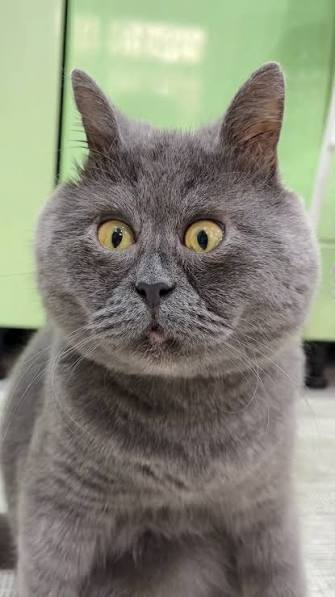

Середній

Британська короткошерста
Кіт
Спокійна та лагідна порода котів із густою шерстю для затишного дому.
Кількість тварин у каталозі: 0

Кіт
Спокійна та лагідна порода котів із густою шерстю для затишного дому.